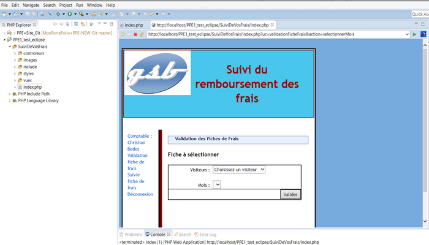

PPE 1 : Application GSB
Application d’enregistrement des frais engagés et de suivi des remboursements
Présentation du contexte :
L'entreprise concernée Nom et origine du nom : GSB (Galaxy Swiss Bourdin) issu de la fusion entre Galaxy (géant américain) et Swiss Bourdin (européen). Année de fusion des laboratoires pour créer GSB : 2009 Lieu du siège social : Philadelphie, Pennsylvanie (USA) Liste des services présents sur le site parisien : gestion des ressources humaines, comptabilité, direction, commercial, labo-recherche, juridique, communication. Liste des systèmes de protections, physiques et logiques, des données sensibles de l'entreprise : accès sécurisé à la salle serveur (accès par ascenseur avec clé sécurisée, par escalier avec lecteur de badge, sas d'entrée avec gardien), réplication des données aux USA par lien dédié, fonctions de redondances pour assurer une tolérance aux pannes maximale. Format des adresses électroniques : nomUtilisateuràswiss-galaxy.com Nom des bases de données achetées périodiquement : BDMED et BDPHARMA
Cahier des charges
Définition de l'objet
Le suivi des frais est actuellement géré de plusieurs façons selon le laboratoire d'origine des visiteurs. On souhaite uniformiser cette gestion L'application doit permettre d'enregistrer tout frais engagé, aussi bien pour l'activité directe (déplacement, restauration et hébergement) que pour les activités annexes (événementiel, conférences, autres), et de présenter un suivi daté des opérations menées par le service comptable (réception des pièces, validation de la demande de remboursement, mise en paiement, remboursement effectué).
Forme de l'objet
L'application Web destinée aux visiteurs, délégués et responsables de secteur sera en ligne, accessible depuis un ordinateur. La partie utilisée par les services comptables sera aussi sous forme d'une interface Web. Le module accessible à la force de visite sera intégré à l'application de gestion des comptes-rendus de visite, mais sous forme d'une interface spécifique (elle ne doit pas être fusionnée à la saisie des CR, elle sera sur un onglet ou une page spécifique).
Accessibilité/Sécurité
L'environnement doit être accessible aux seuls acteurs de l'entreprise. Une authentification préalable sera nécessaire pour l'accès au contenu. Tous les échanges produits doivent être cryptés par le serveur Web.
Les contraintes
Architecture
L’application respectera l’architecture des scripts fournis1 concernant la gestion de l’enregistrement des frais engagés par les visiteurs.
Ergonomie
Les pages fournies ont été définies suite à une consultation. Elles constituent une référence ergonomique. Des améliorations ou variations peuvent être proposées. Codage Le document “ApplisWeb-NormesDevelpt” présente des règles de bonnes pratiques de développement utilisées par le service informatique de GSB pour encadrer le développement d’applications en PHP et en faciliter la maintenance ; les deux applications fournies (GSB-AppliFrais et GSB-AppliFrais-MVC) s’efforcent de les mettre en œuvre. Les éléments à fournir devront respecter le nommage des fichiers, variables et paramètres, ainsi que les codes couleurs et la disposition des éléments déjà fournis.
Environnement
Le langage de script côté serveur doit être le même que celui utilisé dans les pages fournies. L'utilisation de bibliothèques, API ou frameworks est à l'appréciation du prestataire.
Modules
L'application présente deux modules :
- enregistrement et suivi par les visiteurs (code fourni)
- enregistrement des opérations par les comptables
Définition de l’objet
L'application "Gestion des frais" Objectifs de cette application :
- Enregistrement des frais engagés par les visiteurs (déplacement, restauration, hébergement, événementiel, conférence...)
- Présentation d'un suivi daté des opérations menées par le service comptable (réception des pièces, validation de la demande de remboursement, mise en paiement, remboursement effectué)
- Acteurs concernés : visiteurs, délégués, responsables de secteur, service comptable
Restriction des accès :
- Partie "saisie des comptes rendus" : accessible par la force de visite (visiteurs, délégués, responsables de secteur)
- Partie "gestion des remboursements" : accessible par le service comptable
- Partie de code fournie : La partie "saisie des comptes rendus"
Organisation des remboursements :
- remboursement des péages : pas de remboursement car badge individuel
- remboursement des repas/nuitées/étapes : forfait (pas de justificatif)
- remboursement du trajet : en fonction du kilométrage
- remboursement des autres frais : réel sur justificatif
- durée de conservation des justificatifs : 3 ans
- qui s'occupe des éventuels contrôles : délégués régionaux
- fréquence des remboursements : mensuel
- période de saisie des frais : tout le mois pour les frais du mois en cours et éventuellement ceux de l'année écoulée
- date de clôture de la saisie (soyez précis) : dernier jour du mois (plus précisément, dès la première saisie du mois suivant, ou dès le début de campagne de validation des fiches par le service comptable donc entre le 10 et le 20 du mois suivant)
- procédure en cas d'incohérence de saisie constatée par le service comptable : contact téléphonique avec le visiteur et modification faite directement
- date limite pour adresser les factures : le 10 du mois suivant la saisie
- en cas d'envoi hors délai des factures : le frais concerné est basculé automatiquement sur le mois suivant
- opérations possibles par le service comptable au sujet des frais hors forfaits : validation ou non (si non validation, la demande pour ce frais est supprimée et le visiteur est informé)
- date de mise en paiement : le 20 du mois suivant la saisie
- période de consultation, pour un visiteur, des montants remboursés : un an
Le suivi des frais est actuellement géré de plusieurs façons selon le laboratoire d’origine des visiteurs. On souhaite uniformiser cette gestion. L’application doit permettre d’enregistrer tout frais engagé, aussi bien pour l’activité directe (déplacement, restauration et hébergement) que pour les activités annexes (événementiel, conférences, autres), et de présenter un suivi daté des opérations menées par le service comptable (réception des pièces, validation de la demande de remboursement, mise en paiement, remboursement effectué).
Forme de l’objet
L’application Web destinée aux visiteurs, délégués et responsables de secteur sera en ligne, accessible depuis un ordinateur. La partie utilisée par les services comptables sera aussi sous forme d’une interface Web. Le module accessible à la force de visite sera intégrée à l’application de gestion des comptes-rendus de visite, mais sous forme d’une interface spécifique (elle ne doit pas être fusionnée à la saisie des CR, elle sera sur un onglet ou une page spécifique).
Les Missions :
Mission 1 : Développement de la partie comptable Technologies : PHP/MySQL, documentation technique Codage de la partie comptable en respectant le cas d'utilisation correspondant. Et en respectant les normes de développement.
Tâche 1 : Validation d'une fiche de frais Coder la page de validation d'une fiche de frais en respectant le cas d'utilisation "Valider fiche de frais".
Tâche 2 : Suivi du paiement des fiches de frais Coder la page de suivi de âiement en respectant le cas d'utilisation "Suivre le paiement fiche de frais".
Tâche 3 : Production de la documentation Générer la documentation avec phpDocumentor.

Mission 2 : Amélioration de l'application Technologies : PHP/MySQL, classe externe (FPDF)
Tâche 1 : Gestion de refus de certains frais hors forfait Prendre en compte le fait qu'une ligne de frais hors forfait "refusée" ne doit pas être supprimée mais ne doit pas non plus être prise en compte (seul le libellé change avec l'ajout du texte "REFUSE" en début de libellé).
Tâche 2 : Sécurisation des mots de passe stockés Crypter le mot de passe dans la base de données (MD5, SHA-1, SHA-512 ...)
Tâche 3 : Gestion plus fine de l'indemnisation kilométrique Distinguer l'indemnité kilométrique en fonction de la puissance du véhicule.

Experience accomplis :
Participation à un projet d’évolution d’un SI (solution applicative et d’infrastructure portant prioritairement sur le domaine de spécialité du candidat)
Prise en charge d’incidents et de demandes d’assistance liés au domaine de spécialité du candidat
Productions relatives à la mise en place d’un dispositif de veille technologique et à l’étude d’une technologie, d’un composant, d’un outil ou d’une méthode
A1.1.1 , Analyse du cahier des charges d'un service à produire
A1.3.3 , Accompagnement de la mise en place d'un nouveau service
A1.3.4 , Déploiement d'un service
A1.4.1 , Participation à un projet
A2.3.1 , Identification, qualification et évaluation d'un problème
A2.3.1 , Identification, qualification et évaluation d'un problème
A3.2.1 , Installation et configuration d'éléments d'infrastructure
A4.1.2 , Conception ou adaptation de l'interface utilisateur d'une solution applicative
A4.1.3 , Conception ou adaptation d'une base de données
A4.1.6 , Gestion d'environnements de développement et de test
A4.1.8 , Réalisation des tests nécessaires à la validation d'éléments adaptés ou développés
A4.2.1 , Analyse et correction d'un dysfonctionnement, d'un problème de qualité de …
A5.1.2 , Recueil d'informations sur une configuration et ses éléments
A5.1.3 , Suivi d'une configuration et de ses éléments
A5.1.5 , Évaluation d'un élément de configuration ou d'une configuration
A5.2.1 , Exploitation des référentiels, normes et standards adoptés par le prestataire
Technologie utilisée :
Wamp serveur, Eclipse, eGit, github, Phpmyadmin, Xdebug.
Langage utilisé :
PHP